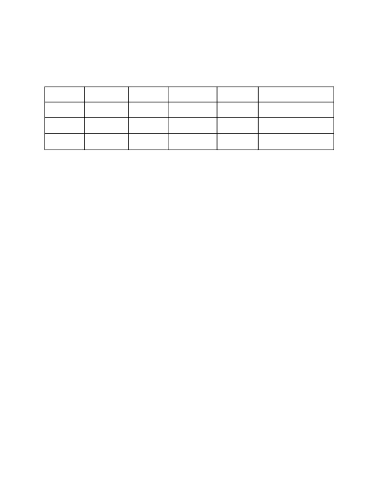
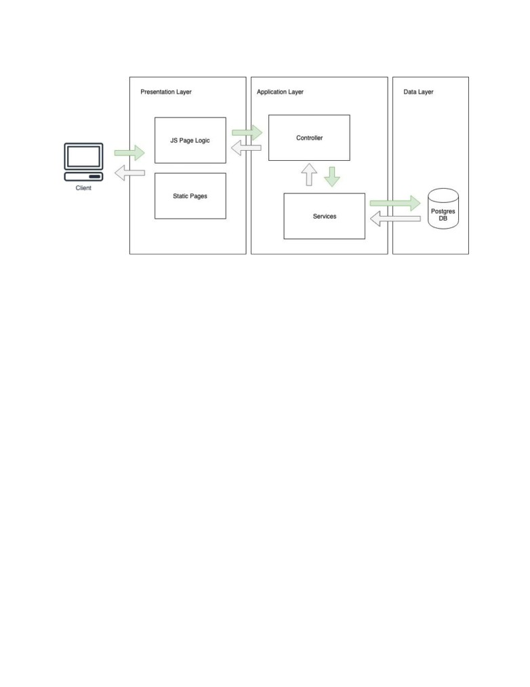
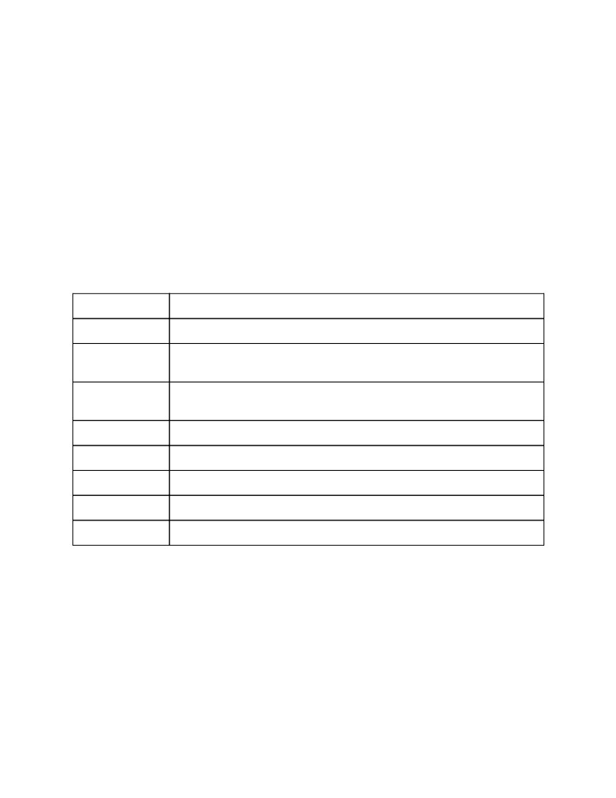
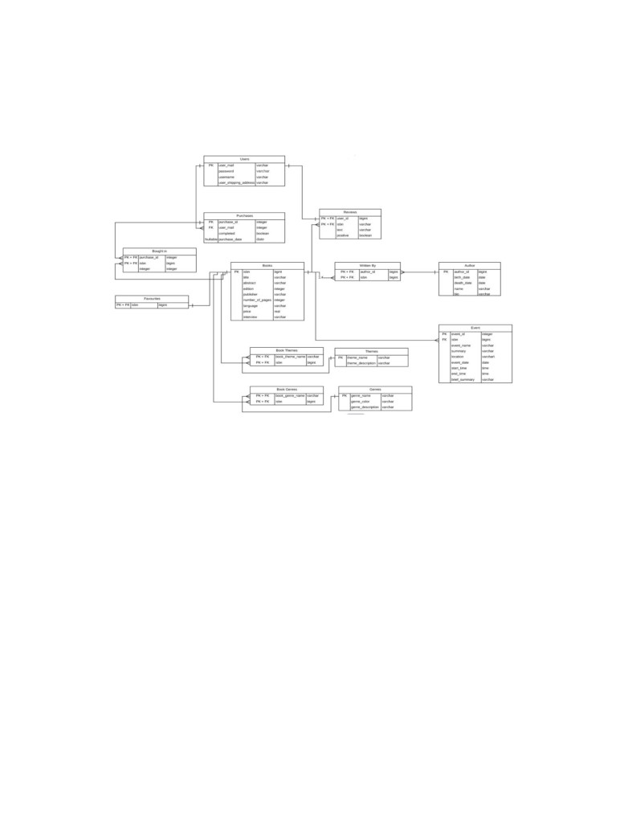
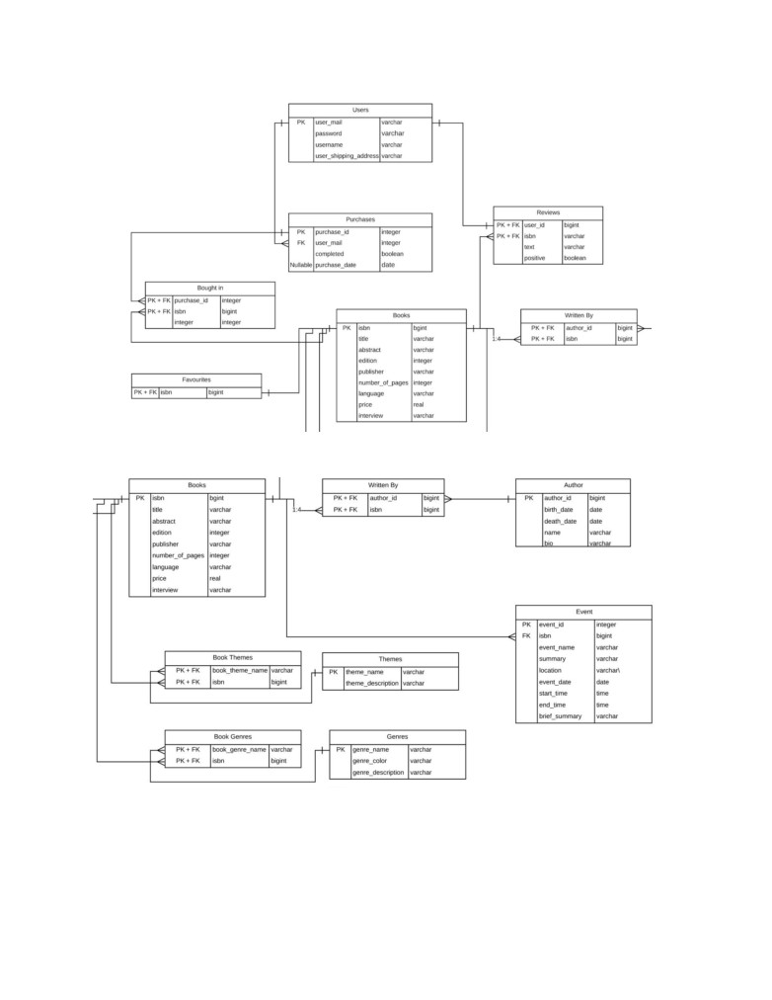
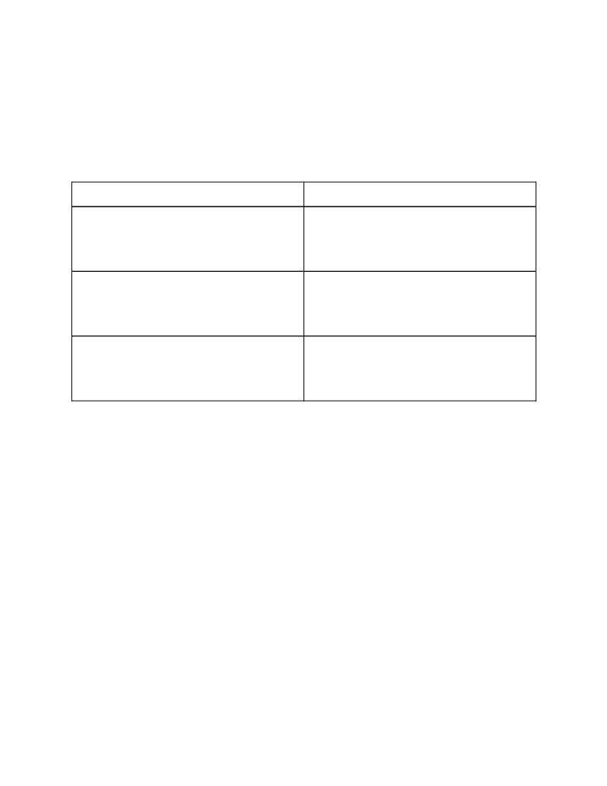

1. General Group Information
Member n.
Role
First name
Last name
Matricola
Email address
1
administrator
Davide
Santambrogio
898956
10492189@polimi.it
2
member
Filippo
Rezzonico
900204
10465844@polimi.it
3
member
Federico
Sandrelli
901425
10492189@polimi.it
2. Links to other deliverables
● Deliverable D2: the YAML file containing the specification of the app API can be found at
● Deliverable D3: the SwaggerUI page of the same API is available
● Deliverable D4: the source code of D0 is available as a zip file
● Deliverable D5: the address of the online source control repository is available
and, upon request, we will give access to the instructors.
3. Specification
3.1 Web architecture
Our application follows a Client - Server Model. The elements at play are:
Client
User’s web browser.
Server
Holds our web application. It is deployed on Heroku
Database
PostrgeSQL relational DB where the contents of our application is stored.
The client interfaces with the Frontend of our web application. The structure of the application is as
follows:

The Frontend of the application was developed using HTML, CSS and JS, while the Server was
developed using the NodeJS Framework. The application handles the client’s requests and interacts with
the Database.
Each static page is linked to one or more JS files which handle the logic of the page. These files are in
charge of generating the dynamic HTML elements of the page and handling the user input. User requests
are captured here and sent to the Controller. Here the user authentication and input checks are performed
(when required) and, if all checks are passed, the input is formatted and sent to the Services Module. The
Server Services Module is in charge of generating the SQL query and interfaces with the Database. Once
the information is retrieved, the information flows backwards along the same path. The Controller filters
the results and decides what response to send back in Json format. All HTML rendering is handled by the
JS files stored on the client side, thus preventing HTML rendering on server side.
3.2 API
3.2.1 REST compliance
Describe here to what extent did you follow REST principles and what are the reasons for which you
might have decided to diverge. Note, you must not describe the whole API here, just the design decisions.
Our web application architecture follows the common REST principles. Indeed, first of all it is
implemented with a client-server structure, which basically means that the two entities are able to evolve
separately without any dependency on each other, where the client knows only the resource URIs and
that’s all. Furthermore it is stateless, meaning that the Server will not store any information about the
previous request of the client and thus it does not have any state. All the information is contained in the

the cookie which is sent, together with the request, to the server (as we will explain later). It is layerable
(see the web architecture above).
All the HTTP request methods have the common meanings, thus GET to retrieve data from the database,
POST to update the data on the server side and DELETE to remove data from the database. Moreover, we
have adhered to the common practices for defining the HTTP Status Codes in our responses:
-
200 For successful operations
-
4xx For client errors (such as ‘409 - unauthorised access’ or ‘404 - not found’)
3.2.2 OpenAPI Resource models
The following are the data models of out Swagger API. They closely reflect the tables in our database,
following the ORM design pattern
Model
Attributes
Author
author_id, name, bio, birth_date, death_date
Book
isbn, title, abstract, publisher, number_of_pages, language, edition, price,
interview
Event
event_id, event_name, summary, location, event_date, start_time, end_time,
brief_summary, isbn
Genre
genre_name, genre_description
Theme
theme_name, theme_description
Purchase
purchase_id, user_mail, completed, purchase_date
User
user_mail, password, username, user_shipping_address
Error
code, description
3.3 Data model
Describe with an ER diagram the model used in the data layer of your web application. How these map to
the OpenAPI data model?
The ER diagram (already described in the Design Document) it represented in the pictures below. All the
main entities are represented also in our OpenApi with also the same name of the attributes in order to
better understand the link between them. The main entities are the ones returned in the various GET
methods (like Books, Authors, Events, Purchases, Genres, …) and of course all the query/body/form

parameters requested to the methods in swagger are mapped to the actual query parameters used in the
various Services of the Server.
ER Diagram

Upper part of the Diagram (enlarged for visibility)
Lower part of the Diagram (enlarged for visibility)
4. Implementation
4.1 Tools used
IDEs: Webstorm, Brackets, DataGrip (for the db)
Rest API: Swagger Editor, Codegen, Restlet Studio
Database: Postgres
Query library: knex
Session library: Cook-Session
Source Control Repository: Github
Package Manager: npm
4.2 Discussion
Describe here:
●
How did you make sure your web application adheres to the provided OpenAPI specification?
We used the Swagger Editor’s functionality to generate the initial code of our Server (the
index.js). In this way, through the swagger middleware, all the client requests are sent to the right
controller generated from swagger to handle the eventual GET, POST or DELETE. We actually
handled the connection between the server and the database, the cookie session to set in the
responses and the implementation of the actual queries to the database through the knex library.
Of course we had to pay attention to pass the right type of inputs to the HTTP request in the client
syde (application/json, application/x-www-form-urlencoded, …) and we had to generate the right
error code for various methods, especially the ones related to the login (401: unauthorized error)
●
Why do you think your web application adheres to common practices to partition the web
application (static assets vs. application data)
Our application adheres to the common practises of the web application partitioning. Indeed, the
HTML pages are the main assets of the static part of our web application. When we have to
render the application data, we perform GET and POST requests with jquery in the client side.
These requests are handled by our application layer that, after querying the relational database,
return to the frontend the response which contains JSON messages in its body. These messages
are then parsed and used to render the application data on the presentation layer.
●
Describe synthetically why and how did you manage session state, what are the state change
triggering actions (e.g., POST to login etc..).
We handled the session state to face the login/registration functionality required for the web
application. Without setting the cookie, obviously the user cannot visualize (and thus perform any
action) on the cart because we need the information about its authentication in order the get his
own purchase not completed. Saving the user_mail in the cookie session (together with a simple
boolean loggedIn) we could have handled this problem, using it in the getPurchaseFindByUser
passing this parameter to the UserService for the query. The triggering actions that can change the
state of the session are:
○ The postUserLogin which sets the boolean to true and sets the value of the
session.user_mail taking it from the request sent
○ The postUser, which performs the registration of the User creating a tuple in the User
table of the db, change the session like the postUserLogin
○ The postUserLogout sets the session to null
○ The getUserCheck, like the getPurchaseFindByUser and the postPurchase, checks if the
session has the login setup. It is called in order to customize the presentation Layer, for
example showing the Logout link instead of the Login one
● Which technology did you use (relational or a no-SQL database) for managing the data model?
We used a relational Postgres database for its simplicity in the structure and its easy usability. As
we said before, we used the knex library in order to perform the query in JavaScript to the db, set
up by heroku that gave us the credentials to connect to it.
5. Other Information
5.1 Task assignment
We started working on the Hypermedia Project together in order to better define the design and how to
implement it. When this first phase was over we divided our tasks in three parts and assigned them:
● Presentation Layer: Filippo Rezzonico
● Application Layer: Federico Sandrelli
● Data Layer: Davide Santambrogio
Since the data layer required less effort to be completed we later redefined our task subdivision into:
● Frontend development: Filippo Rezzonico + Federico Sandrelli
● Backend development: Davide Santambrogio + Federico Sandrelli
As soon as the backend development was over we all started improving the aesthetics of our website and
speeding up the frontend development.

It is worth mentioning that, even if not equally balanced, all team members spent some time on
developing all website’s main components, so that we could gain some experience in all the aspects of a
website development.
The following table best shows the efforts of all the team members:
Team member
Effort spent
Davide Santambrogio
Data Layer: 85%
Application Layer: 60%
Presentation Layer: 5%
Documentation: 15%
Filippo Rezzonico
Data Layer: 5%
Application Layer: 10%
Presentation Layer: 55%
Documentation: 75%
Federico Sandrelli
Data Layer: 10%
Application Layer: 30%
Presentation Layer: 40%
Documentation: 10%
5.2 Analysis of existing API
Describe here if you have found relevant APIs that have inspired the OpenAPI specification and why (at
least two).
We didn’t follow any famous API for our OpenAPI specification, especially because we didn’t find ant
Restful API that could have followed our requirements for the application. On the other hand, we studied
the example of the Petstore given on Swagger editor to understand the basics of the OpenAPI tool and the
main structure. Furthermore, the piece of swagger written in class by the professor Zaccaria and some
others retrieved in the web inspired the details of handling the authentication and the good practises for
the HTTP requests document description.
5.3 Learning outcome
Davide Santambrogio learned to code in JavaScript especially in the Server side. He handled the
connection to the database, the managing of the cookie session and the implementation of some of the
queries in Services. Furthermore he used Swagger to specify the APIs and generate the main code of the
Server in which the middlewares of swagger run (index.js). He also handled some of the jquery requests
client side and a little bit of html for the static pages. This for sure will help him in future web application
projects and it is an important curricular experience.
Filippo Rezzonico learned to write html pages, first statically with html and css, later dynamically adding
content loaded from the database layer with javascript GET and POST requests. He also learned how the
server accepts requests and queries the database in order to send responses to the presentation layer. With
what he learned, he decided to develop his one website where he will load is CV and projects in order to
improve his visibility in the job market.
Federico Sandrelli: I learned how to structure a web application, how to deploy such application on a
service such as Heroku and how to link it to a Database. As the development of the project proceeded I
learned how to code in Javascript and improved my understanding of HTML and CSS. In particular I
learned how to simplify and improve web page development using the Bootstrap framework. I also
learned how to generate queries to a relational DB using the Knex framework and how to use the query
results to dynamically generate content on a web page. Compared to the minimal experience I had,
developing a website back in high school, this project has definitely taught me web development on a
whole new level.